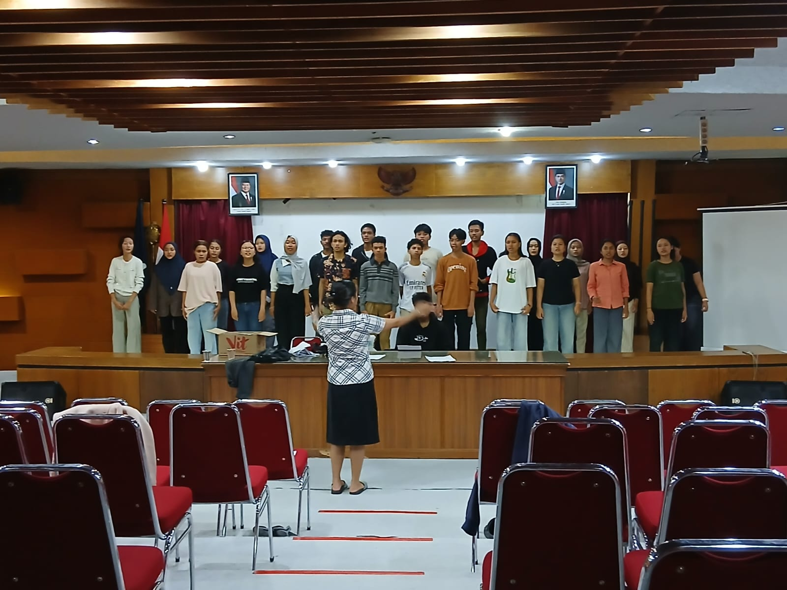
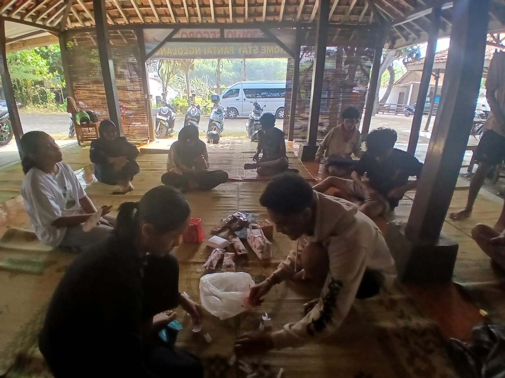
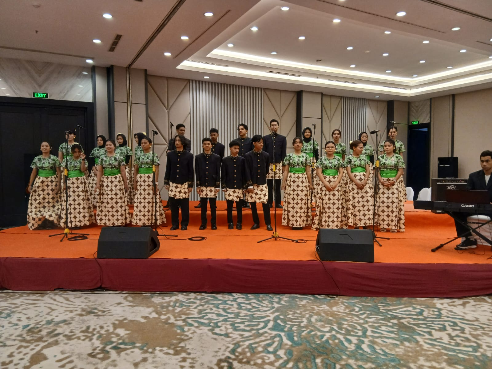
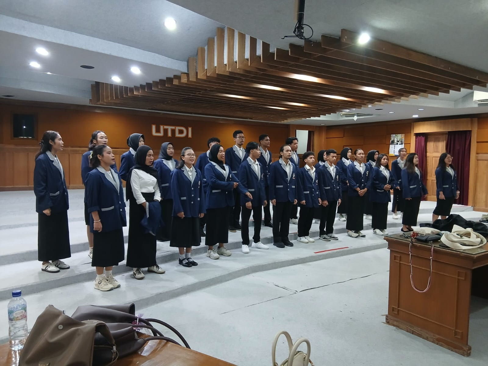
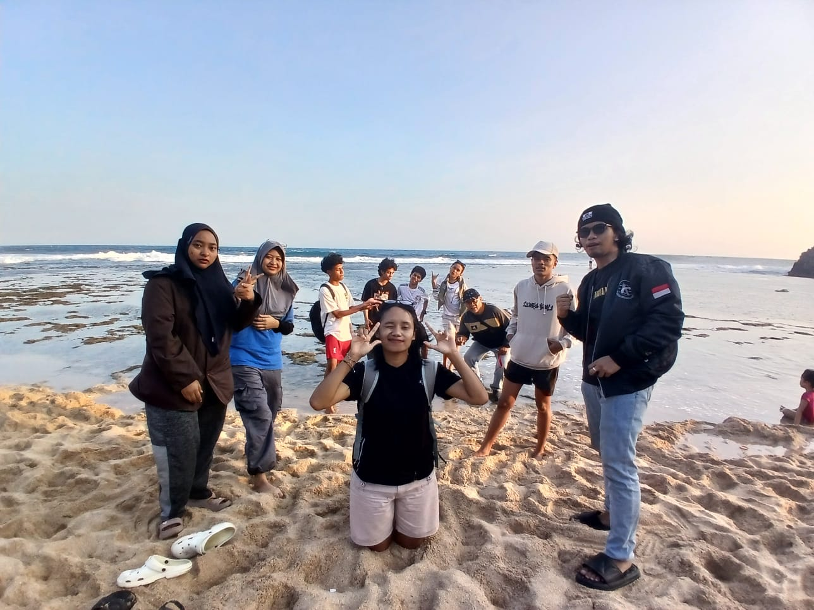

Paduan Suara Mahasiswa — Universitas Teknologi Digital Indonesia. Satu harmoni, satu suara, satu keluarga.
Ruang bagi mahasiswa untuk menyalurkan bakat menyanyi, membangun kekompakan, dan mengharumkan nama kampus di panggung seni.
Symphony Choir berdiri sejak tahun 2021 sebagai wadah pengembangan minat vokal mahasiswa. Berawal dari sekelompok mahasiswa yang menggemari paduan suara, kini Symphony Choir menjadi UKM yang konsisten meraih prestasi di tingkat regional maupun nasional.
Cakupan suara yang dimiliki Symphony Choir memberikan pengalaman bernyanyi yang utuh dan berjenjang bagi setiap anggotanya.
Perjalanan Symphony Choir dalam angka — anggota aktif, prestasi, dan momen di atas panggung.
Momen-momen latihan, kompetisi, dan penampilan terbaik kami.





Agenda Symphony Choir yang akan datang — jangan sampai terlewat.
Mengisi acara wisuda dengan penampilan lagu nasional dan klasik.
Membawa UKM Symphony dalam pengiringan lagu pada acara Guru besar.
Konser paduan suara dalam tournament futsal di UNY.